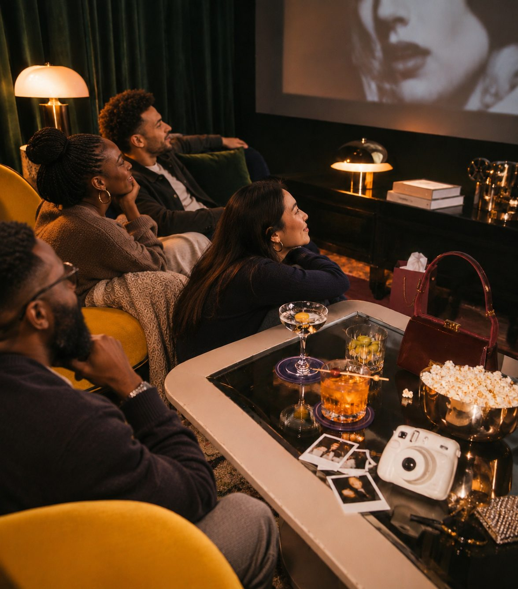

STORIES TRAVEL
THROUGH PEOPLE.
The audience is becoming part of the story.
PlayLane is a media technology platform building an audience-led film network.
MORE CONTENT. MORE INDIVIDUAL CONSUMPTION.
Our biggest competitor is modern-day isolation.
We’ve never had more access to films and entertainment. Yet so much of that experience has become individual.
We believe technology can do more than deliver content. It can bring people together around it.

I tried to organize a film night. Everyone claimed to be busy.
♡ 3,180Movie nights hit different when you share the experience with others.
♡ 748My friends live 10 minutes away. We have not watched a film together in 3 years.
♡ 412I am so tired of paying for multiple subscriptions and still having nothing to watch.
♡ 1,420Cinema is beginning to feel like content.
♡ 892Subscribed to 5 platforms and still confused on what to see.
♡ 2,314I miss when picking a good film was a bet.
♡ 574I miss when picking a film was an event, not just scrolling for 40 minutes.
♡ 4,210I used to invite people to films. Now I just send movie links.
♡ 2,876I would 100% go to a community movie night with people I have never met.
♡ 1,103Imagine meeting your best friend at a stranger movie night. It could happen.
♡ 982The theatre experience died when streaming took over. Bring it back differently.
♡ 1,467Community viewing made movie time exciting.
♡ 3,340Real value for the audience.
PlayLane is building for the moments that happen when watching becomes a shared experience.
Discover films through people who share your curiosity. Bring the stories you love to your neighbourhood. Create cinema experiences that reflect your taste, connect you with others and give you the opportunity to earn from the experiences you host.
People are the network.
The films you champion. The experiences you create. The people you bring together. You don’t just discover film culture. You help shape it.
Not just consumers.
Participants. Insiders.
BE FIRST IN THE LANE.
PlayLane is coming. Join the waitlist to get early access to a new way to discover films, create WatchLanes and bring your people together.